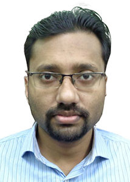

Dr. Sreeradha Bagchi Paul
MBBS
Specialisation: Medical Superintendent
Dr. Debasish Sarkar
MBBS, MS
Specialization :Cataract
Dr. Abu Obaid Bani Sadat
M.B.B.S, M.S., FICO, Fellow of Paediatric (Ophth) & Strabismus
Specialization :Paediatric Ophthalmology, Cataract
Dr. Nalinakshi Karan
M.B.B.S, D.O., DNB (Ophthalmology) and Fellowship in Cataract & Cornea
Specialization :Cataract & Cornea
Dr. Madhusudan Mandal
M.B.B.S, MS, Fellowship(Cataract)
Specialization :Cataract
Dr. Ratish Chandra Paul , Secretary
MBBS, DOMS, MS(IPGMER)
Specialisation: Cataract & Anterior Segment
Dr. Navajoyti Goswami
MBBS, MS
Specialization :Cataract, Glaucoma, Refractive Surgery

Dr. Diptesh Das
M.B.B.S, D.O.
Specialization :Cataract

Dr.Utsab Pan
MBBS, MS, DNB, FVRS .
Specialization :Vitreo-Retina
Dr. Arunava Bandyopadhyay
M.B.B.S, M.S
Specialization :Cataract
Dr. RAJARSHI CHOWDHURY
MBBS, MS
Specialization :Cataract
Dr. Amina Usmani
M.B.B.S, M.S., Cataract Fellowship
Specialization :Cataract
Dr. Amit Budrukkar
MBBS, DNB (New Delhi), FICO
Specialization :Glaucoma and Cataract Services
Dr. Kousik Sarkar
(MBBS, MS, Specialization in Cataract Microsurgery & Phacoemulsification)
Specialization :Cataract